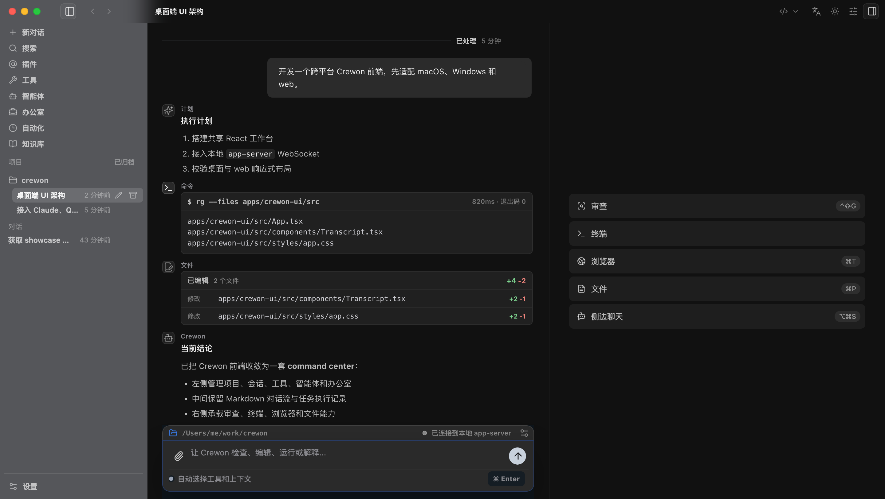
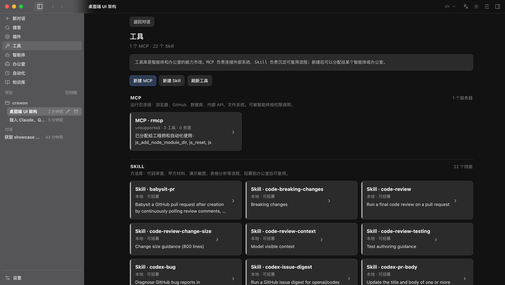
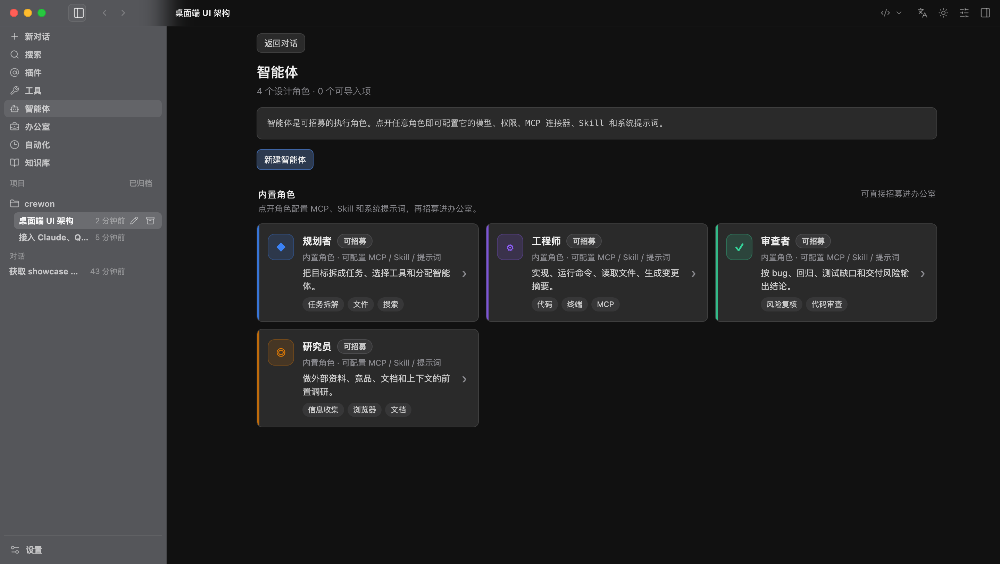
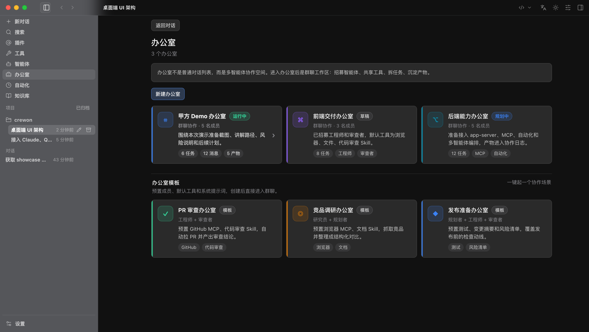
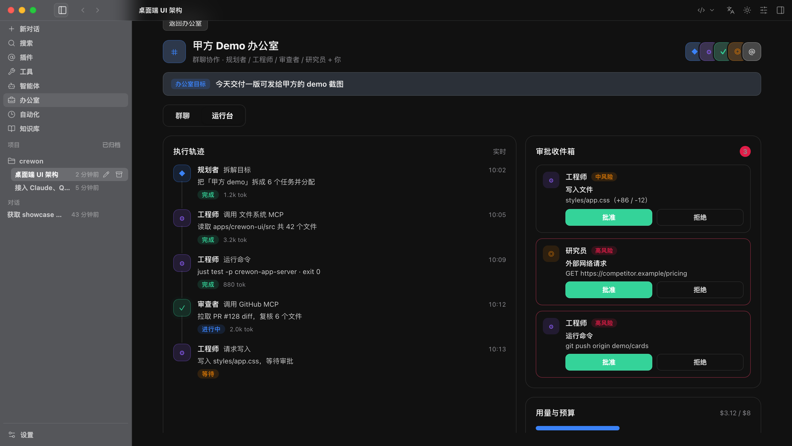
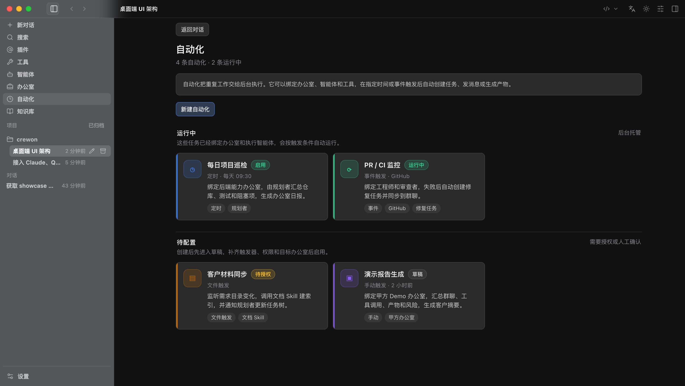
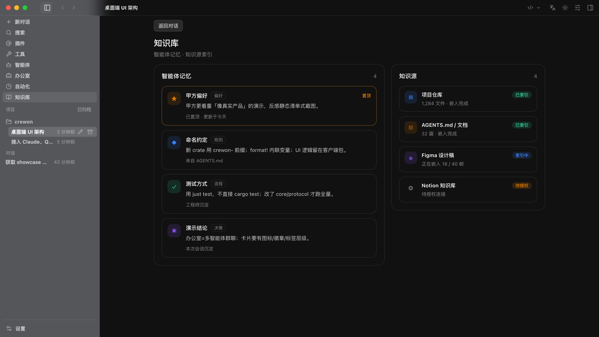

目标驱动执行
你描述目标，系统自动规划步骤、选择工具、调度智能体，直至产出可交付的成果，而非停留在建议层面。
多数工具止步于一问一答。Crewon 关注结果如何落地：将目标拆解为任务，调用合适的能力协同推进，完成复核与交付，并保留完整、可追溯的执行过程。
你描述目标，系统自动规划步骤、选择工具、调度智能体，直至产出可交付的成果，而非停留在建议层面。
读写文件、运行命令、调用浏览器与外部系统、生成文档与图表；各项能力经由 MCP 与 Skill 灵活接入。
每次执行均有实时轨迹、风险分级审批与用量预算，关键操作交由人工确认后再执行。
偏好、规范与知识源被长期记录并复用，人员变动时上下文不致流失。
从一次对话出发，将规划、执行、协作、自动化与知识沉淀串联为闭环。
左侧管理项目与会话，中间呈现包含计划、命令、文件变更的结构化对话流，右侧实时显示连接状态、代码改动与任务进度。系统在做什么、进展到哪一步，始终一目了然。

通过 MCP 连接 GitHub、数据库、浏览器、内部 API 与文件系统；以 Skill 沉淀代码审查、材料整理、数据分析等可复用流程。各项能力可按权限分配给指定智能体或办公室。

规划者、工程师、审查者、研究员等角色，均可独立配置模型、权限边界、系统提示词，以及可调用的 MCP 与 Skill。一次配置，长期复用。

办公室是多智能体协作空间。在群聊中 @ 指派任务，智能体相互协同、推进任务看板、沉淀产物。你作为负责人，在其中跟进进展、确认决策、调整方向。

每个办公室均配备运行台：实时执行轨迹、按风险分级的审批收件箱、按角色统计的用量与预算，以及沉淀下来的产物。高风险操作须经人工批准方可执行。

将定时巡检、PR/CI 监控、材料同步等任务绑定至办公室与智能体，按触发条件自动运行；同时把偏好、规范、决策与知识源沉淀为团队记忆，供持续检索与复用。


Crewon 深入具体工作流，针对不同职能的实际场景提供端到端支持。
从需求拆解、编码、测试到 PR 审查，工程师与审查者智能体协同推进；改动附带 diff 与审批，团队只需把控关键节点。
编码与评审衔接为一次连续交付研究员智能体采集竞品信息、整理对比、生成结构化报告，并将结论沉淀至知识库，供后续调研直接复用既有上下文。
资料整理周期由数小时缩短至数分钟材料同步、周报汇总、数据整理交由自动化定时执行，团队在办公室群聊中统一对齐进度与产物。
常规事务自动化，人力专注判断与决策PR/CI、仓库巡检与关键指标由事件触发自动跟进，异常时自动创建任务并同步至群聊，第一时间介入处理。
从事后发现转向异常主动响应规划、执行与复核并行推进，将多人多日的协作压缩至一次对话。
macOS、Windows、Web 共享同一套会话与体验，切换设备不中断。
执行有轨迹、操作有审批、用量有预算，满足合规与安全要求。
偏好与知识沉淀为团队记忆，人员变动时经验得以保留。
Crewon 连接本地工作区运行，数据与执行始终处于掌控之中。统一的权限、审批与预算机制，让团队在明确的边界内，安心地将更多工作交由 AI 完成。